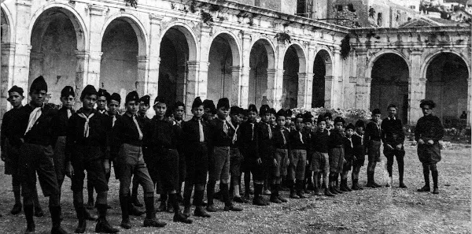
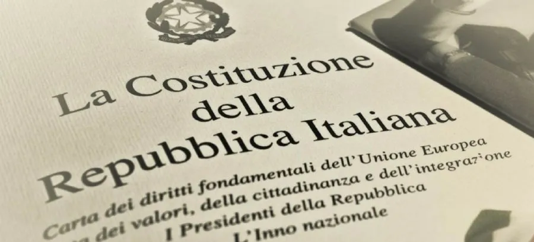

Na década de 1930, sob o regime fascista de Benito Mussolini, a Itália buscava restaurar seu antigo esplendor imperial. Mussolini aspirava a recriar a glória do Império Romano e expandir as fronteiras italianas. Em 1939, a Itália se juntou à Alemanha nazista, liderada por Adolf Hitler, e ao Império Japonês para formar a aliança conhecida como o Eixo. Essa adesão marcou o início da participação italiana na Segunda Guerra Mundial.
Em 1940, a Itália iniciou suas campanhas militares, invadindo a Grécia e o Norte da África. No entanto, as forças italianas enfrentaram dificuldades significativas em ambos os fronts. A invasão da Grécia foi repelida pelas forças gregas e a ajuda alemã foi necessária para avançar. No Norte da África, o exército italiano sofreu derrotas para as forças britânicas lideradas pelo General Bernard Montgomery.
Entrada na Guerra ao Lado dos Aliados
Em 1943, a situação militar italiana tornou-se cada vez mais precária. As derrotas militares e a crescente insatisfação interna com o regime fascista levaram à queda de Mussolini. Em setembro de 1943, a Itália assinou um armistício com os Aliados, abandonando o Eixo. No entanto, a Alemanha nazista não aceitou a rendição italiana e ocupou a Itália, estabelecendo a República Social Italiana, um estado-fantoche fascista liderado por Mussolini. Após a ocupação alemã, a Itália se tornou um campo de batalha para a resistência contra o regime fascista e a ocupação nazista. A resistência italiana, conhecida como a Resistenza, foi composta por grupos de guerrilha que lutavam contra as forças alemãs e seus colaboradores. A Resistenza desempenhou um papel crucial na libertação do país e na queda do regime fascista.
Libertação e o Fim do Regime Fascista
Em 1945, as forças aliadas, juntamente com os combatentes da Resistenza, conseguiram libertar a Itália do domínio nazista. Em abril de 1945, Mussolini foi capturado e executado por partisans italianos. Com a derrota alemã iminente, a República Social Italiana entrou em colapso. Em maio de 1945, a Segunda Guerra Mundial na Europa chegou ao fim com a rendição incondicional da Alemanha. A participação da Itália na Segunda Guerra Mundial teve consequências devastadoras para o país. Milhares de italianos perderam suas vidas em combate, e o país enfrentou destruição em várias áreas. Além disso, a participação do regime fascista de Mussolini na guerra deixou uma mancha indelével na história italiana. Após a guerra, a Itália embarcou em um processo de reconstrução e reconciliação. A Constituição Italiana de 1947 baniu o fascismo e estabeleceu a Itália como uma república democrática. O país, mais tarde, se tornou um dos membros fundadores da União Europeia, buscando garantir a paz e a cooperação internacional após os horrores da guerra.

A participação da Itália na Segunda Guerra Mundial foi complexa e controversa, refletindo a turbulência política da época. Enquanto o regime fascista se aliou ao Eixo, a resistência interna lutou por liberdade e justiça. A Itália emergiu da guerra com cicatrizes profundas, mas também mostrou resiliência na busca por um futuro de paz e democracia. O legado da Segunda Guerra Mundial na Itália continua a moldar sua identidade até os dias de hoje.